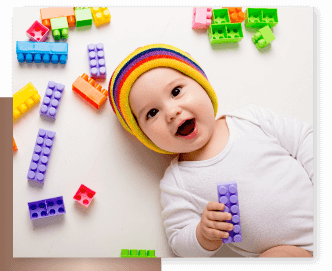

SERVICES
- บริการของเรา -
สิ่งที่เราให้ความสำคัญอันดับแรก คือ
การเลี้ยงและดูแลเด็กด้วยความรัก ความอบอุ่น และความปลอดภัย เราต้องยอมรับว่า การดูแลเด็กในยุคสมัยนี้แตกต่างไปจากยุคของรุ่นคุณพ่อคุณแม่ของเราอย่างมาก การดูแลเด็กในปัจจุบัน จึงมิใช่เป็นเพียงการดูแลกิจวัตรประจำวันทั่วไป เช่น อาบน้ำ ป้อนข้าว หรือกล่อมนอนเท่านั้น ความรู้เกี่ยวกับเทคนิควิธีดูแล และกระตุ้นพัฒนาการด้านต่างๆ ให้เข้ากับสังคมยุคปัจจุบัน และทักษะที่สำคัญสำหรับเด็กในยุคศตวรรษที่ 21 ซึ่งควรต้องรู้และปฏิบัติได้อย่างถูกวิธี
เป้าหมายของการอบรม
1. เพื่อให้ผู้ดูแลเด็กตระหนักถึงบทบาทและความสำคัญของตนในฐานะผู้ดูแลเด็ก
2. เพื่อให้รู้จักวิธีปฏิบัติ เสมือนเด็กเป็นบุคคลที่มีคุณค่า
3. เพื่อให้ผู้ดูแลเด็กรู้จักวิธีการดูแลเด็กอย่างถูกวิธี
4. เพื่อให้ผู้ดูแลเด็กสามารถจัดกิจกรรม เพื่อส่งเสริมพัฒนาการในทุกๆ ด้านให้เหมาะสมกับวัย
5. เพื่อให้ผู้ดูแลเด็กรู้จักแยกแยะระหว่าง “ธรรมชาติของเด็ก” กับ “ปัญหาพฤติกรรม”
คุณวุฒิวิชาชีพ
ผู้ที่จะเข้าสู่ระดับคุณวุฒิวิชาชีพ อาชีพผู้ดูแลเด็ก ระดับ 1 จะต้องมีคุณสมบัติอย่างใดอย่างหนึ่งดังนี้ 1. มีสัญชาติไทยอายุไม่ต่ำกว่า 18 ปีบริบูรณ์ 2. สามารถอ่านออกเขียนได้ และสื่อสารภาษาไทยได้ หรือ 3. มีความรู้และทักษะในการดูแลเด็ก โดยมีประสบการณ์ต่อเนื่องในการดูแลเด็กไม่น้อยกว่า 2 ปี และมีหลักฐานเอกสารรับรอง หรือ 4. ผ่านอบรมหลักสูตรการดูแลเด็กไม่น้อยกว่า 70 ชั่วโมง ที่จัดโดยส่วนราชการที่เกี่ยวข้อง หรือหน่วยงานเอกชนที่หลักสูตรได้รับอนุญาตจากกระทรวงศึกษาธิการ
SERVICE
- บริการของเรา -
ให้บริการผู้ดูแลเด็ก (Timmy Service)
>>> พี่เลี้ยงเด็กของเรา
สิ่งที่เราให้ความสำคัญอันดับแรกที่ทิมมี่เซ็นเตอร์ คือ การเลี้ยงและดูแลเด็กด้วยความรัก ความอบอุ่น และความปลอดภัย จากความเชื่อที่ว่า พี่เลี้ยงเป็นบุคคลที่ใกล้ชิดและมีอิทธิพลต่อความรู้สึกนึกคิดและทัศนคติของเด็กมาก ขั้นตอนการคัดเลือกพี่เลี้ยงเด็กจึงไม่ใช่เพียงประสบการณ์ในการเลี้ยงเด็กของพี่เลี้ยงเท่านั้น แต่เราจะให้ความสำคัญกับทัศนคติและธรรมชาตินิสัยของบุคคลที่จะทำงานเป็นพี่เลี้ยงกับเราด้วย โดยบุคคลที่มีความเหมาะสมจะเป็นพี่เลี้ยงเด็ก นอกจากจะต้องมีความรักความอบอุ่นโดยธรรมชาติของนิสัยตนแล้ว ยังจะต้องรู้จักคุณค่าและตระหนักถึงความสำคัญของการทำงานบริการพี่เลี้ยงเด็กอีกด้วยพี่เลี้ยงเด็กทุกคน จะได้รับการฝึกอบรมทั้งทางด้านทักษะการดูแล กิจวัตรประจำวันของเด็ก การส่งเสริมพัฒนาการของเด็กในด้านต่างๆ ตลอดจนการปฏิบัติตนให้เป็นแบบอย่างที่ดี หรือแม้แต่การดูแลจัดการกับความเครียดของพี่เลี้ยงเอง ที่อาจเกิดขึ้นเนื่องจากงานหรือพฤติกรรมตามธรรมชาติของเด็กแต่ละคน
>>> หน้าที่ความรับผิดชอบของพี่เลี้ยงเด็ก มีอะไรบ้าง
พี่เลี้ยงมีหน้าที่หลัก 4 ข้อ คือ
1.ดูแลความปลอดภัยของน้อง
2.ดูแลกิจวัตรประจำวันของน้อง
3.ส่งเสริมพัฒนาการของน้องให้เหมาะสมกับวัย
4.ส่งเสริมพฤติกรรมที่ดี และหยุดพฤติกรรมไม่เหมาะสมกิจวัตรประจำวันต่างๆ ของน้อง ได้แก่
- เตรียมอาหาร นม และของว่าง
- อาบน้ำ ทำความสะอาดร่างกายส่วนต่างๆ จัดเตรียมเสื้อผ้า แต่งตัว
- ดูแลทำความสะอาดห้องนอนและบริเวณที่เล่นของน้อง
- ดูแลทำความสะอาดเสื้อผ้า ขวดนม จานชาม เครื่องใช้และของเล่นของน้อง
- เล่านิทาน อ่านหนังสือ สอนน้องทำการบ้าน
- จัดหากิจกรรมสันทนาการให้เหมาะสมกับวัยและความสนใจของน้อง
- ดูแลความปลอดภัยของน้องตลอดเวลาที่อยู่กับพี่เลี้ยง
- ช่วยเหลืองานบ้านที่เกี่ยวข้องกับน้อง
>>> รูปแบบบริการพี่เลี้ยงเด็ก
ทิมมี่เซ็นเตอร์ อัตราเงินเดือน จะขึ้นอยู่กับประสบการณ์ทำงาน วุฒิการศึกษา และทัศนคติ อุปนิสัยส่วนตัวของพนักงาน
แบบเต็มเวลา (Live-in) พักอาศัยกับผู้ว่าจ้าง
- เงินเดือน 18,000 - 26,000 บาท
- ค่าล่วงเวลา (OT) 800
- 1,500 บาท ต่อวัน - เวลาทำงาน 24 ชั่วโมง - ค่าอาหาร 150 บาท/วัน
- วันหยุด สัปดาห์ๆ ละ 1 วัน,นักขัตฤกษ์ 13 วัน/ปี
แบบไปกลับ (Live-out)
- เงินเดือน 17,000 - 21,000 บาท
- ค่าล่วงเวลา (OT) 800 - 1,500 บาท ต่อวัน
- เวลาทำงาน ทำ จ-ศ. วันละ 12 ชั่วโมง/วัน,ทำ จ-ส. วันละ 10 ชั่วโมง/วัน
- ค่าอาหาร 50 บาท/วัน - วันหยุด สัปดาห์ๆ ละ 1-2 วัน, นักขัตฤกษ์ 13 วัน/ปี
- ค่าเดินทาง ไป-กลับ (ตามจริง)
ค่าอาหาร : กรณีที่บ้านมีเตรียมให้ ไม่ต้องชำระ
ค่าเดินทาง : คิดตามจริง ( ระบบขนส่งสาธารณะ)
ค่าอาหาร ค่าเดินทาง ค่าโอที :จ่ายตรงให้กับพี่เลี้ยง เวลาเริ่มงาน : สำหรับแบบไป-กลับ ลูกค้าสามารถระบุเวลาเริ่มงานเองได้
: สำหรับแบบเต็มเวลา เวลาการทำงานขึ้นอยู่กับนโยบายของแต่ละบ้าน
หลักสูตรอบรมการดูแลเด็กสำหรับผู้ดูแลเด็ก (Childcare Program)
1.หัวข้อการดูแลเด็กทั่วไป
2.หัวข้อโภชนาการสำหรับเด็กแต่ละช่วงวัย
3.หัวข้อพัฒนาการของเด็กแต่ละช่วงวัย
4.หัวข้อพฤติกรรมและจิตวิทยาในเด็ก
5.หัวข้อการปฐมพยาบาลและดูแลเด็กป่วยเบื้องต้น (First Aid & CPR)
การจัดอบรม : เปิดเดือนเว้นเดือน มี 2 รอบ รอบวันเสาร์ 3 วัน รอบวันธรรมดา 3 วัน
ราคา : สมัครเต็มคอร์ส 5,500 บาท แยกหัวข้อๆ วันละ 1,700 บาท เวลา : 09.00-16.00 น.
สถานที่ : ศูนย์ฝึกอบรมบางกอกแนนนี่เซ็นเตอร์
การเดินทาง :
1. เส้นสุขุมวิท นั่ง BTS ลงสถานีอุดมสุข(สุขุมวิท 103) ลงฝั่งซ้ายมือ (ประตู 3)—->นั่งรถสองแถวหรือรถตู้สายที่จะไปประเวศ/สวนหลวง ร.9
2. เส้นศรีนครินทร์ นั่งรถลงที่ซีคอนสแควร์—–>นั่งรถสองแถวสายที่ไปสวนหลวง ร.9/ประเวศ——>ลงรถที่ซอยเฉลิมพระเกียรติ 31 (ประมาณ 10 นาทีจากซีคอน)——>Bangkok Nanny Center อยู่ฝั่งตรงข้ามซ.เฉลิมพระเกียรติ ร.9 ซอย 31 หมู่บ้าน Plus City Park(หลังที่ 4 ซ้ายมือค่ะ)
หลักสูตรอบรมสำหรับคุณพ่อคุณแม่ (Private course)
- เลี้ยงลูกไม่ได้ดั่งใจ...ทำอย่างไรดี - การเลี้ยงลูกเชิงบวก
- หลักสูตรการนวดให้กับลูกน้อย (Baby Spa Training)
- เลี้ยงลูกอย่างไร...ให้ได้ทุนการศึกษา
- ห้องเรียนพ่อแม่ จ.เชียงราย โดย คุณหมอประเสริฐ ผลิตผลการพิมพ์
- คอร์สสำหรับคุณแม่ตั้งครรภ์- พลิกมุมมองเรื่องเพศ คุยกับลูกเชิงบวก
หลักสูตรอบรมผู้ดูแลเด็กสำหรับโรงเรียนและองค์กร (In-house Training)
หลักสูตร Childcare program for Nannies
1.หัวข้อการดูแลเด็กทั่วไป
2.หัวข้อพัฒนาการของเด็กแต่ละช่วงวัย
3.หัวข้อพฤติกรรมและจิตวิทยาในเด็ก
4.หัวข้อการปฐมพยาบาลและดูแลเด็กป่วยเบื้องต้น (First Aid & CPR)
การจัดอบรม : วัน/เวลาขึ้นอยู่กับองค์ที่กำหนด
สถานที่ : องค์กรของท่าน
คุณวุฒิวิชาชีพ สาขาวิชาชีพผู้ดูแลเด็ก Thailand Professional Qualification Institute (TPQI)
คุณวุฒิวิชาชีพสาขาวิชาชีพบริการสุขภาพ อาชีพผู้ดูแลเด็ก ชั้น 1 เป็นบุคคลที่มีความรู้และทักษะในการปฏิบัติงานประจำขั้นพื้นฐานทั่วไป สามารถแก้ปัญหาพื้นฐานในการปฏิบัติงานได้อย่างจำกัด และเป็นผู้ที่มีสมรรถนะในการระบุรายละเอียดด้านโภชนาการเด็ก ด้านกิจวัตรประจาวันของเด็ก ด้านความปลอดภัยของเด็ก และด้านการดูแลสิ่งแวดล้อม เป็นผู้ที่มีสมรรถนะในการส่งเสริมด้านการดูแลร่างกาย ด้านจิตใจ-อารมณ์ ด้านสังคม ด้านสติปัญญา และยึดหลักจรรยาบรรณอาชีพตามบทบาทของผู้ดูแลเด็ก ด้วยบริการที่ดี
*ลงทะเบียนสำหรับผู้ที่สนใจเข้ารับการประเมินสมรรถนะคุณวุฒิวิชาชีพผู้ดูแลเด็ก ระดับ 1
กิจกรรมสำหรับเด็ก (Activities for Kids)
- Little Chef Soft Chocolate Cookies with Soft Skills
- ติดจรวดยานความคิดให้ Entrepreneur Kids

คอร์สออนไลน์ การดูแลเด็กทั่วไป (แรกเกิด - 6 ปี)
คอร์สออนไลน์ การดูแลเด็กทั่วไป (แรกเกิด - 6 ปี)
สิ่งที่ได้รับจากการเรียน
1.บทเรียนทุกบทเรียน ถูกออกแบบขึ้นมาเพื่อให้ผู้เรียน เข้าใจง่าย นำไปใช้ได้เลย และให้เสมือนเราเจอตัวจริง เช่น
- การดูแลชีวิตประจำวันของน้อง
- เรียนรู้เรื่องพัฒนาการของเด็กแต่ละช่วงวัย การกระตุ้นพัฒนาการและการส่งเสริมกิจกรรมการเล่นของน้อง
- วิธีการรับมือพฤติกรรมของเด็ก การปรับพฤติกรรม วินัยเชิงบวก การฝึกวินัยด้านต่างๆ
2.เป็นทักษะพื้นฐานที่ผู้ดูแลเด็กพึงมี
3.มีตัวอย่างสอดแทรกให้ผู้เรียนสามารถเข้าใจง่ายยิ่งขึ้น กว่า 10 เคส
4.มีกลุ่มเพื่อพูดคุย/ปรึกษาเรื่องการดูแลเด็กกับวิทยากรฟรี!!!
5.สามารถเรียนย้อนหลังได้ตลอดชีพ สำหรับผู้เรียนที่ต้องการนำความรู้ไปประกอบอาชีพพี่เลี้ยงเด็ก ทางเราสามารถให้คำแนะนำได้ค่ะ